Luis M. González
Con base en (Secretaría de Salud - DGIS, 16 de julio de 2026)
| Nivel de atención: | TERCER NIVEL |
| Tipología: | HOSPITAL GENERAL |
| Subtipología: | NO ESPECIFICADO |
| Tipo de establecimiento: | HOSPITALIZACIÓN |
| Estrato: | URBANO |
| Estatus: | EN OPERACIÓN |
| Región: | SURESTE |
| Entidad: | CHIAPAS |
| Municipio: | TUXTLA GUTIÉRREZ |
| Localidad: | TUXTLA GUTIÉRREZ |
| Coordenadas: | 16.7484597, -93.0727995 |
| Domicilio: | LIBRAMIENTO CENTENARIO DEL EJERCITO MEXICANO1913-2013 No. SIN NÚMERO |
| CIUDAD LAS TORRES | |
| TUXTLA GUTIÉRREZ, CHP | |
| CP 29045 | |
| Fecha de construcción: | 2009-08-01 |
| Fecha de inicio de operación: | 2014-11-12 |
| Propiedad del inmueble: | PROPIO |
| Último movimiento: | ALTA |
| Fecha del último movimiento: | 2024-07-18 |
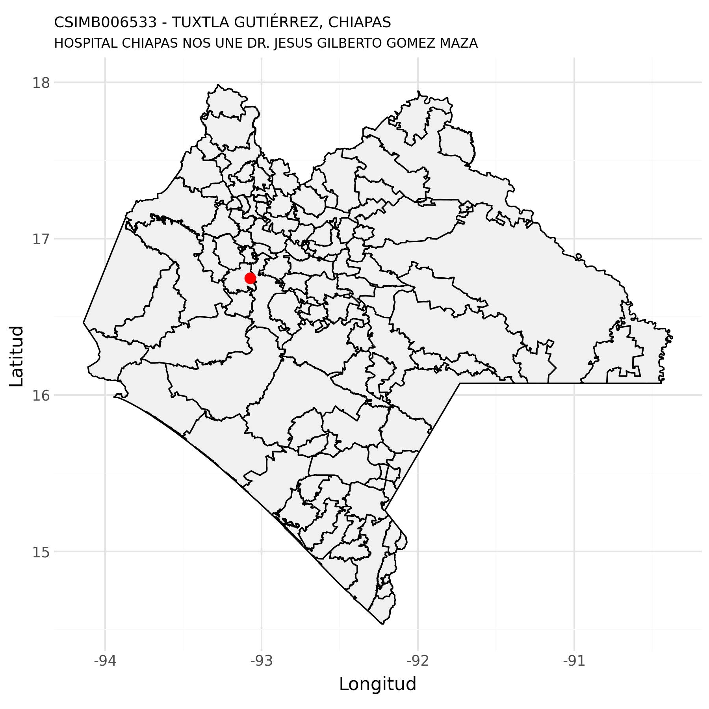
Fecha de última actualización en SINERHIAS:
2026-07-08 (Secretaría de Salud - DGIS, 30 de
julio de 2026)
| Plazas | Totales | Ocupadas | Desocupadas |
|---|---|---|---|
| Médicos: | 317 | 317 | 0 |
| Médicos en adiestramiento: | 215 | 215 | 0 |
| Médicos en otras actividades: | 56 | 56 | 0 |
| Enfermeras: | 776 | 776 | 0 |
| Enfermeras en otras actividades: | 93 | 93 | 0 |
| Otro personal profesional: | 153 | 153 | 0 |
| Personal técnico: | 308 | 308 | 0 |
| Otro personal: | 328 | 328 | 0 |
| Total recursos humanos: | 2246 | 2246 | 0 |
| Plazas | Totales | Ocupadas | Desocupadas |
|---|---|---|---|
| Médicos generales: | 91 | 91 | 0 |
| Pediatras: | 45 | 45 | 0 |
| Ginecoobstetras: | 1 | 1 | 0 |
| Cirujanos: | 28 | 28 | 0 |
| Internistas: | 18 | 18 | 0 |
| Oftalmólogos: | 1 | 1 | 0 |
| Otorrinolaringólogos: | 5 | 5 | 0 |
| Traumatólogos: | 18 | 18 | 0 |
| Anestesiólogos: | 28 | 28 | 0 |
| Psiquiátras: | 2 | 2 | 0 |
| Odontólogos especialistas: | 2 | 2 | 0 |
| Gastroenterólogos: | 2 | 2 | 0 |
| Cardiólogos: | 5 | 5 | 0 |
| Médicos en rehabilitación: | 2 | 2 | 0 |
| Urólogos: | 2 | 2 | 0 |
| Cirujanos plásticos: | 2 | 2 | 0 |
| Neumólogos: | 3 | 3 | 0 |
| Oncólogos: | 2 | 2 | 0 |
| Hematólogos: | 1 | 1 | 0 |
| Urgenciólogos: | 26 | 26 | 0 |
| Nefrólogos: | 3 | 3 | 0 |
| Geriatras: | 1 | 1 | 0 |
| Radiólogos: | 10 | 10 | 0 |
| Otros médicos: | 15 | 15 | 0 |
| Total médicos: | 317 | 317 | 0 |
| Plazas | Totales | Ocupadas | Desocupadas |
|---|---|---|---|
| Médicos internos de pregrado: | 124 | 124 | 0 |
| Médicos residentes: | 91 | 91 | 0 |
| Médicos en adiestramiento: | 215 | 215 | 0 |
| Plazas | Totales | Ocupadas | Desocupadas |
|---|---|---|---|
| Médicos en labores administrativas: | 9 | 9 | 0 |
| Médicos en enseñanza e investigacion: | 3 | 3 | 0 |
| Médicos epidemiólogos: | 8 | 8 | 0 |
| Otros médicos: | 34 | 34 | 0 |
| Total médicos en otras actividades: | 56 | 56 | 0 |
| Plazas | Totales | Ocupadas | Desocupadas |
|---|---|---|---|
| Enfermeras generales: | 523 | 523 | 0 |
| Enfermeras especialistas: | 72 | 72 | 0 |
| Enfermeras pasantes: | 76 | 76 | 0 |
| Enfermeras auxiliares: | 105 | 105 | 0 |
| Total enfermeras: | 776 | 776 | 0 |
| Plazas | Totales | Ocupadas | Desocupadas |
|---|---|---|---|
| Enfermeras labores administrativas: | 87 | 87 | 0 |
| Enfermeras enseñanza o investigación: | 3 | 3 | 0 |
| Enfermeras otras: | 3 | 3 | 0 |
| Total enfermeras en otras actividades: | 93 | 93 | 0 |
| Plazas | Totales | Ocupadas | Desocupadas |
|---|---|---|---|
| Químicos: | 44 | 44 | 0 |
| Trabajo social: | 57 | 57 | 0 |
| Farmacobiólogos: | 1 | 1 | 0 |
| Nutriólogos: | 21 | 21 | 0 |
| Psicólogos: | 25 | 25 | 0 |
| Ingenieros biomédicos: | 5 | 5 | 0 |
| Total otro personal profesional: | 153 | 153 | 0 |
| Plazas | Totales | Ocupadas | Desocupadas |
|---|---|---|---|
| Laboratorio: | 12 | 12 | 0 |
| Estadística: | 14 | 14 | 0 |
| Atención primaria: | 5 | 5 | 0 |
| Rehabilitación física: | 4 | 4 | 0 |
| Radiología: | 25 | 25 | 0 |
| Dietista: | 33 | 33 | 0 |
| Histopatología: | 2 | 2 | 0 |
| Otro personal técnico: | 213 | 213 | 0 |
| Total personal técnico: | 308 | 308 | 0 |
| Plazas | Totales | Ocupadas | Desocupadas |
|---|---|---|---|
| Personal administrativo: | 247 | 247 | 0 |
| Archivo clínico: | 24 | 24 | 0 |
| Conservación y mantenimiento: | 16 | 16 | 0 |
| Intendencia: | 13 | 13 | 0 |
| Otro personal: | 28 | 28 | 0 |
| Total otro personal: | 328 | 328 | 0 |
Fecha de última actualización en SINERHIAS:
2026-07-08 (Secretaría de Salud - DGIS, 30 de
julio de 2026)
| Consultorios | Totales | Habilitados | Deshabilitados |
|---|---|---|---|
| Medicina general: | 2 | 0 | 2 |
| Total consulta externa básica: | 2 | 0 | 2 |
| Consultorios | Totales | Habilitados | Deshabilitados |
|---|---|---|---|
| Cardiología: | 1 | 1 | 0 |
| Cirugía general: | 2 | 2 | 0 |
| Gastroenterología: | 1 | 1 | 0 |
| Geriatría: | 1 | 1 | 0 |
| Infectología: | 1 | 1 | 0 |
| Medicina de rehabilitación: | 2 | 2 | 0 |
| Medicina del dolor: | 1 | 1 | 0 |
| Medicina interna: | 1 | 1 | 0 |
| Nefrología: | 1 | 1 | 0 |
| Neumología: | 1 | 1 | 0 |
| Oftalmología: | 1 | 1 | 0 |
| Oncología: | 2 | 2 | 0 |
| Ortopedia: | 1 | 1 | 0 |
| Otorrinolaringología: | 1 | 1 | 0 |
| Pediatría: | 1 | 1 | 0 |
| Psiquiatría: | 1 | 1 | 0 |
| Urología: | 1 | 1 | 0 |
| Traumatología: | 1 | 1 | 0 |
| Cirugía maxilofacial: | 1 | 1 | 0 |
| Otras especialidades: | 1 | 1 | 0 |
| Total consultorios de especialidad: | 23 | 23 | 0 |
| Áreas específicas | Totales | Habilitados | Deshabilitados |
|---|---|---|---|
| Camas en área de urgencias: | 35 | 34 | 1 |
| Salas de choque: | 3 | 3 | 0 |
| Consultorios en área de urgencias: | 3 | 3 | 0 |
| Camas en área de observación: | 22 | 21 | 1 |
| Camas | Totales | Habilitados | Deshabilitados |
|---|---|---|---|
| Camas de cirugía general y reconstructiva: | 42 | 40 | 2 |
| Camas de medicina interna: | 63 | 46 | 17 |
| Camas de pediatría: | 50 | 32 | 18 |
| Camas de traumatología: | 18 | 18 | 0 |
| Total camas censables: | 173 | 136 | 37 |
| Quirófanos | Totales | Habilitados | Deshabilitados |
|---|---|---|---|
| Salas de operación: | 9 | 6 | 3 |
| Camas | Totales | Habilitados | Deshabilitados |
|---|---|---|---|
| Camas de recuperación postquirurgica: | 14 | 13 | 1 |
| Camas | Totales | Habilitados | Deshabilitados |
|---|---|---|---|
| Camas de terapia intensiva adultos: | 16 | 7 | 9 |
| Camas de terapia intensiva pediátricas: | 8 | 5 | 3 |
| Camas | Totales | Habilitados | Deshabilitados |
|---|---|---|---|
| Camas de cuidados intermedios (pediátricas y adultos): | 8 | 0 | 8 |
| Camas | Totales | Habilitados | Deshabilitados |
|---|---|---|---|
| Camas en área de cuidados coronarios: | 3 | 1 | 2 |
| Áreas específicas | Totales | Habilitados | Deshabilitados |
|---|---|---|---|
| Salas de operación de cirugía ambulatoria: | 2 | 0 | 2 |
| Camas de recuperación de cirugíaa ambulatoria: | 8 | 7 | 1 |
| Áreas específicas | Totales | Habilitados | Deshabilitados |
|---|---|---|---|
| Centrales de enfermería: | 1 | 1 | 0 |
Fecha de última actualización en SINERHIAS:
2026-07-08 (Secretaría de Salud - DGIS, 30 de
julio de 2026)
| Ambulancias | Totales | Habilitados | Deshabilitados |
|---|---|---|---|
| Ambulancias: | 6 | 4 | 2 |
Fecha de última actualización en SINERHIAS:
2026-07-08 (Secretaría de Salud - DGIS, 30 de
julio de 2026)
Fecha de última actualización en SINERHIAS:
2026-07-08 (Secretaría de Salud - DGIS, 30 de
julio de 2026)
Con base en SINERHIAS: (Secretaría de Salud - DGIS, 30 de julio de 2026)
| Equipo | ¿Funciona? | Procedimientos diarios | Actualización |
|---|---|---|---|
| MASTOGRAFO DIGITAL | SI | 3 | 2026-06-02 |
| RESONANCIA MAGNETICA DE 1.5 TESLAS | SI | 0 | 2026-06-02 |
| TOMOGRAFO DE 128 CORTES O MAS | SI | 25 | 2025-10-24 |
| ANGIOGRAFO ARCO BIPLANAR | NO | 0 | 2026-06-02 |
| LITOTRIPTOR ELECTROCONDUCTIVO | NO | 0 | 2025-10-24 |
| LITOTRIPTOR INTRACORPOREO ELECTROMECANICO | NO | 0 | 2026-06-03 |
| MASTOGRAFO DIGITAL | NO | 0 | 2026-06-02 |
| Equipo | Funcionando | Fuera de servicio | Total |
|---|---|---|---|
| ANALIZADOR DE ELECTROCARDIOGRAFIA HOLTER | 1 | 0 | 1 |
| ANALIZADOR DE LA COAGULACION (COAGULOMETRO) | 1 | 0 | 1 |
| ANALIZADOR DE MICROBIOLOGIA | 6 | 0 | 6 |
| ANALIZADOR DE QUIMICA CLINICA | 1 | 0 | 1 |
| ARCO EN C DIGITAL (RAYOS X MOVIL CON FLUOROSCOPIA) | 1 | 0 | 1 |
| ASPIRADOR DE SUCCION REGULABLE (DE PARED) | 24 | 0 | 24 |
| ASPIRADOR PORTATIL DE SUCCION CONTINUA | 3 | 0 | 3 |
| BASCULA CON ESTADIMETRO | 17 | 0 | 17 |
| BASCULA ELECTRONICA PARA SILLA DE RUEDAS | 1 | 0 | 1 |
| BASCULA PARA BEBE | 3 | 0 | 3 |
| BOMBA DE INFUSION PORTATIL | 2 | 1 | 3 |
| BOMBA DE INFUSION VOLUMETRICA | 27 | 0 | 27 |
| CAMARA SONOAMORTIGUADA | 0 | 1 | 1 |
| CAMILLA | 3 | 0 | 3 |
| CAMPANA DE FLUJO LAMINAR | 0 | 3 | 3 |
| CAMPIMETRO | 1 | 0 | 1 |
| CARRO ROJO CON DESFIBRILADOR MONITOR Y EQUIPO DE REANIMACION | 24 | 0 | 24 |
| CENTRIFUGA DE MESA PARA TUBOS CAPILARES | 5 | 0 | 5 |
| DENSITOMETRO OSEO DE CUERPO ENTERO | 1 | 0 | 1 |
| DESFIBRILADOR AUTOMATIZADO EXTERNO | 1 | 1 | 2 |
| DIALISIS PERITONEAL AUTOMATIZADA (EQUIPO PORTATIL) | 13 | 0 | 13 |
| ECOCARDIOGRAFO | 1 | 0 | 1 |
| ELECTROCARDIOGRAFO | 13 | 0 | 13 |
| ELECTROENCEFALOGRAFO | 1 | 0 | 1 |
| EQUIPO DE CORRIENTES INTERFERENCIALES | 0 | 7 | 7 |
| EQUIPO DE HEMOFILTRACION PARA TERAPIA RENAL CONTINUA | 13 | 0 | 13 |
| EQUIPO DE OSMOSIS INVERSA PORTATIL | 1 | 0 | 1 |
| ESFIGMOMANOMETRO ANEROIDE | 94 | 0 | 94 |
| ESPIROMETRO | 0 | 1 | 1 |
| ESTETOSCOPIO BIAURICULAR | 38 | 0 | 38 |
| ESTUCHE DE DIAGNOSTICO COMPLETO (OFTALMOSCOPIO Y OTOSCOPIO) | 18 | 0 | 18 |
| ESTUFA BACTERIOLOGICA | 2 | 0 | 2 |
| LAMPARA QUIRURGICA DOBLE | 9 | 0 | 9 |
| LAMPARA QUIRURGICA PORTATIL PARA EMERGENCIA | 5 | 0 | 5 |
| MESA DE EXPLORACION GENERAL | 10 | 0 | 10 |
| MESA PARA TERAPIA FISICA | 4 | 0 | 4 |
| MESA QUIRURGICA | 8 | 0 | 8 |
| MICROSCOPIO BASICO DE RUTINA | 8 | 2 | 10 |
| MICROSCOPIO PARA OFTALMOCIRUGIA | 1 | 0 | 1 |
| MICROSCOPIO QUIRURGICO PARA OTORRINOLARINGOLOGIA | 1 | 0 | 1 |
| MONITOR DE SIGNOS VITALES BASICO (ECG, PANI. SPO2, TEMP) | 131 | 0 | 131 |
| MONITOR DE SIGNOS VITALES DE TRASLADO | 7 | 1 | 8 |
| MONITOR DE SIGNOS VITALES INTERMEDIO (ECG, PANI. SPO2, TEMP,PRESION INVASIVA, CO2) | 17 | 0 | 17 |
| NEGATOSCOPIO | 35 | 0 | 35 |
| OXIMETRO DE PULSO CON DESPLIEGUE DE CURVA DE PLETISMOGRAFIA | 7 | 0 | 7 |
| POLIGRAFO | 1 | 0 | 1 |
| REANIMADOR MANUAL | 8 | 0 | 8 |
| REFRIGERADOR DE FARMACIA | 3 | 0 | 3 |
| REFRIGERADOR PARA LABORATORIO CLINICO | 8 | 0 | 8 |
| REFRIGERADOR PARA VACUNAS | 2 | 0 | 2 |
| SILLONES DE APLICACION AMBULATORIA DE QUIMIOTERAPIA | 5 | 0 | 5 |
| SISTEMA DE MONITORIZACION FISIOLOGICA EN PRUEBAS DE ESFUERZO | 1 | 0 | 1 |
| SISTEMA INMOVILIZACION | 3 | 0 | 3 |
| SISTEMAS DE ARCHIVO Y COMUNICACION DE IMAGENES (PACS) | 2 | 0 | 2 |
| TONOMETRO OFTALMICO | 2 | 0 | 2 |
| TORRE DE VIDEO PARA ENDOSCOPIA ALTA | 1 | 0 | 1 |
| TORRE DE VIDEO PARA ENDOSCOPIA BAJA | 1 | 0 | 1 |
| TORRE DE VIDEO PARA LAPAROSCOPIA | 1 | 0 | 1 |
| ULTRACONGELADOR | 6 | 0 | 6 |
| ULTRASONIDO DE DIAGNOSTICO | 24 | 2 | 26 |
| UNIDAD DE ANESTESIA BASICA | 10 | 0 | 10 |
| UNIDAD DE ANESTESIA DEDICADA PARA RESONANCIA MAGNETICA (RM | 1 | 0 | 1 |
| UNIDAD DE ELECTROCIRUGIA GENERAL | 1 | 0 | 1 |
| UNIDAD DE POTENCIALES EVOCADOS | 1 | 0 | 1 |
| UNIDAD DE ULTRASONIDO TERAPEUTICO | 0 | 5 | 5 |
| UNIDAD RADIOLOGICA DIGITAL DE PROPOSITO GENERAL | 2 | 0 | 2 |
| UNIDAD RADIOLOGICA PORTATIL DIGITAL (EQUIPO PORTATIL DE RAYOS X) | 3 | 0 | 3 |
| VENTILADOR ADULTO - PEDIATRICO | 4 | 0 | 4 |
| VENTILADOR ADULTO - PEDIATRICO - NEONATAL | 1 | 0 | 1 |
| VENTILADOR DE TRASLADO NEONATAL | 1 | 0 | 1 |
| VENTILADOR DE TRASLADO PEDIATRICO - ADULTO | 1 | 0 | 1 |
| VENTILADOR DE TRASLADO PEDIATRICO-ADULTO | 0 | 1 | 1 |
Con base en SINERHIAS: (Secretaría de Salud - DGIS, 30 de julio de 2026)
| Equipo | Funcionando | Fuera de servicio | Total | Actualización |
|---|---|---|---|---|
| BASCULA PARA BEBE | 1 | 0 | 1 | 2025-04-30 |
| ESFIGMOMANOMETRO ANEROIDE | 1 | 0 | 1 | 2025-04-30 |
| MESA DE EXPLORACION GENERAL | 1 | 0 | 1 | 2025-04-30 |
| NEGATOSCOPIO | 1 | 0 | 1 | 2025-04-30 |
| Equipo | Funcionando | Fuera de servicio | Total | Actualización |
|---|---|---|---|---|
| ANALIZADOR DE ELECTROCARDIOGRAFIA HOLTER | 1 | 0 | 1 | 2025-04-30 |
| BASCULA CON ESTADIMETRO | 17 | 0 | 17 | 2025-04-30 |
| CAMARA SONOAMORTIGUADA | 0 | 1 | 1 | 2025-04-30 |
| CAMPIMETRO | 1 | 0 | 1 | 2025-04-30 |
| ELECTROCARDIOGRAFO | 1 | 0 | 1 | 2025-04-30 |
| ELECTROENCEFALOGRAFO | 1 | 0 | 1 | 2026-06-03 |
| ESFIGMOMANOMETRO ANEROIDE | 29 | 0 | 29 | 2025-04-30 |
| ESPIROMETRO | 0 | 1 | 1 | 2025-04-30 |
| ESTETOSCOPIO BIAURICULAR | 18 | 0 | 18 | 2025-04-30 |
| ESTUCHE DE DIAGNOSTICO COMPLETO (OFTALMOSCOPIO Y OTOSCOPIO) | 11 | 0 | 11 | 2025-04-30 |
| MICROSCOPIO QUIRURGICO PARA OTORRINOLARINGOLOGIA | 1 | 0 | 1 | 2025-04-30 |
| NEGATOSCOPIO | 25 | 0 | 25 | 2025-04-30 |
| REFRIGERADOR PARA VACUNAS | 1 | 0 | 1 | 2025-04-30 |
| SISTEMA DE MONITORIZACION FISIOLOGICA EN PRUEBAS DE ESFUERZO | 1 | 0 | 1 | 2025-04-30 |
| TONOMETRO OFTALMICO | 2 | 0 | 2 | 2025-04-30 |
| ULTRASONIDO DE DIAGNOSTICO | 1 | 0 | 1 | 2025-04-30 |
| UNIDAD DE POTENCIALES EVOCADOS | 1 | 0 | 1 | 2025-04-30 |
| Equipo | Funcionando | Fuera de servicio | Total | Actualización |
|---|---|---|---|---|
| ULTRACONGELADOR | 3 | 0 | 3 | 2025-04-30 |
| Equipo | Funcionando | Fuera de servicio | Total | Actualización |
|---|---|---|---|---|
| CARRO ROJO CON DESFIBRILADOR MONITOR Y EQUIPO DE REANIMACION | 1 | 0 | 1 | 2026-04-09 |
| MONITOR DE SIGNOS VITALES INTERMEDIO (ECG, PANI. SPO2, TEMP,PRESION INVASIVA, CO2) | 1 | 0 | 1 | 2026-04-09 |
| Equipo | Funcionando | Fuera de servicio | Total | Actualización |
|---|---|---|---|---|
| CARRO ROJO CON DESFIBRILADOR MONITOR Y EQUIPO DE REANIMACION | 2 | 0 | 2 | 2025-04-30 |
| ELECTROCARDIOGRAFO | 2 | 0 | 2 | 2025-06-30 |
| MESA DE EXPLORACION GENERAL | 4 | 0 | 4 | 2025-04-30 |
| MONITOR DE SIGNOS VITALES BASICO (ECG, PANI. SPO2, TEMP) | 12 | 0 | 12 | 2025-04-30 |
| Equipo | Funcionando | Fuera de servicio | Total | Actualización |
|---|---|---|---|---|
| EQUIPO DE CORRIENTES INTERFERENCIALES | 0 | 7 | 7 | 2026-04-09 |
| UNIDAD DE ULTRASONIDO TERAPEUTICO | 0 | 5 | 5 | 2026-04-09 |
| Equipo | Funcionando | Fuera de servicio | Total | Actualización |
|---|---|---|---|---|
| CARRO ROJO CON DESFIBRILADOR MONITOR Y EQUIPO DE REANIMACION | 1 | 0 | 1 | 2025-04-30 |
| ESFIGMOMANOMETRO ANEROIDE | 1 | 0 | 1 | 2025-04-30 |
| MONITOR DE SIGNOS VITALES BASICO (ECG, PANI. SPO2, TEMP) | 4 | 0 | 4 | 2025-04-30 |
| POLIGRAFO | 1 | 0 | 1 | 2025-04-30 |
| UNIDAD DE ANESTESIA BASICA | 1 | 0 | 1 | 2025-04-30 |
| Equipo | Funcionando | Fuera de servicio | Total | Actualización |
|---|---|---|---|---|
| ASPIRADOR DE SUCCION REGULABLE (DE PARED) | 7 | 0 | 7 | 2025-04-30 |
| CARRO ROJO CON DESFIBRILADOR MONITOR Y EQUIPO DE REANIMACION | 5 | 0 | 5 | 2025-04-30 |
| ELECTROCARDIOGRAFO | 3 | 0 | 3 | 2025-06-30 |
| ESFIGMOMANOMETRO ANEROIDE | 50 | 0 | 50 | 2025-04-30 |
| MONITOR DE SIGNOS VITALES BASICO (ECG, PANI. SPO2, TEMP) | 31 | 0 | 31 | 2025-04-30 |
| VENTILADOR ADULTO - PEDIATRICO | 1 | 0 | 1 | 2025-06-30 |
| Equipo | Funcionando | Fuera de servicio | Total | Actualización |
|---|---|---|---|---|
| DENSITOMETRO OSEO DE CUERPO ENTERO | 1 | 0 | 1 | 2025-04-30 |
| ECOCARDIOGRAFO | 1 | 0 | 1 | 2025-04-30 |
| NEGATOSCOPIO | 3 | 0 | 3 | 2025-04-30 |
| SISTEMAS DE ARCHIVO Y COMUNICACION DE IMAGENES (PACS) | 2 | 0 | 2 | 2025-04-30 |
| ULTRASONIDO DE DIAGNOSTICO | 23 | 2 | 25 | 2026-06-02 |
| UNIDAD DE ANESTESIA BASICA | 1 | 0 | 1 | 2025-04-30 |
| UNIDAD DE ANESTESIA DEDICADA PARA RESONANCIA MAGNETICA (RM | 1 | 0 | 1 | 2025-04-30 |
| UNIDAD RADIOLOGICA DIGITAL DE PROPOSITO GENERAL | 2 | 0 | 2 | 2026-06-02 |
| UNIDAD RADIOLOGICA PORTATIL DIGITAL (EQUIPO PORTATIL DE RAYOS X) | 3 | 0 | 3 | 2026-06-02 |
| Equipo | Funcionando | Fuera de servicio | Total | Actualización |
|---|---|---|---|---|
| MESA PARA TERAPIA FISICA | 4 | 0 | 4 | 2025-04-30 |
| Equipo | Funcionando | Fuera de servicio | Total | Actualización |
|---|---|---|---|---|
| BOMBA DE INFUSION VOLUMETRICA | 3 | 0 | 3 | 2025-04-30 |
| CAMILLA | 3 | 0 | 3 | 2025-04-30 |
| CARRO ROJO CON DESFIBRILADOR MONITOR Y EQUIPO DE REANIMACION | 1 | 0 | 1 | 2025-04-30 |
| ESFIGMOMANOMETRO ANEROIDE | 5 | 0 | 5 | 2025-04-30 |
| MONITOR DE SIGNOS VITALES BASICO (ECG, PANI. SPO2, TEMP) | 1 | 0 | 1 | 2025-04-30 |
| REFRIGERADOR DE FARMACIA | 1 | 0 | 1 | 2025-04-30 |
| SILLONES DE APLICACION AMBULATORIA DE QUIMIOTERAPIA | 5 | 0 | 5 | 2025-04-30 |
| Equipo | Funcionando | Fuera de servicio | Total | Actualización |
|---|---|---|---|---|
| CARRO ROJO CON DESFIBRILADOR MONITOR Y EQUIPO DE REANIMACION | 1 | 0 | 1 | 2025-04-30 |
| MONITOR DE SIGNOS VITALES BASICO (ECG, PANI. SPO2, TEMP) | 9 | 0 | 9 | 2025-06-30 |
| OXIMETRO DE PULSO CON DESPLIEGUE DE CURVA DE PLETISMOGRAFIA | 7 | 0 | 7 | 2025-04-30 |
| Equipo | Funcionando | Fuera de servicio | Total | Actualización |
|---|---|---|---|---|
| CARRO ROJO CON DESFIBRILADOR MONITOR Y EQUIPO DE REANIMACION | 1 | 0 | 1 | 2025-04-30 |
| MONITOR DE SIGNOS VITALES BASICO (ECG, PANI. SPO2, TEMP) | 8 | 0 | 8 | 2025-04-30 |
| Equipo | Funcionando | Fuera de servicio | Total | Actualización |
|---|---|---|---|---|
| ASPIRADOR DE SUCCION REGULABLE (DE PARED) | 8 | 0 | 8 | 2025-04-30 |
| BASCULA PARA BEBE | 2 | 0 | 2 | 2025-04-30 |
| CARRO ROJO CON DESFIBRILADOR MONITOR Y EQUIPO DE REANIMACION | 5 | 0 | 5 | 2025-04-30 |
| ELECTROCARDIOGRAFO | 5 | 0 | 5 | 2025-04-30 |
| ESTUCHE DE DIAGNOSTICO COMPLETO (OFTALMOSCOPIO Y OTOSCOPIO) | 4 | 0 | 4 | 2025-04-30 |
| MESA DE EXPLORACION GENERAL | 5 | 0 | 5 | 2025-04-30 |
| MONITOR DE SIGNOS VITALES BASICO (ECG, PANI. SPO2, TEMP) | 48 | 0 | 48 | 2025-04-30 |
| MONITOR DE SIGNOS VITALES DE TRASLADO | 5 | 0 | 5 | 2025-04-30 |
| VENTILADOR ADULTO - PEDIATRICO | 3 | 0 | 3 | 2025-06-30 |
| VENTILADOR ADULTO - PEDIATRICO - NEONATAL | 1 | 0 | 1 | 2025-04-30 |
| VENTILADOR DE TRASLADO NEONATAL | 1 | 0 | 1 | 2025-04-30 |
| VENTILADOR DE TRASLADO PEDIATRICO - ADULTO | 1 | 0 | 1 | 2025-06-30 |
| Equipo | Funcionando | Fuera de servicio | Total | Actualización |
|---|---|---|---|---|
| LAMPARA QUIRURGICA DOBLE | 2 | 0 | 2 | 2025-04-30 |
| MESA QUIRURGICA | 2 | 0 | 2 | 2025-04-30 |
| MICROSCOPIO PARA OFTALMOCIRUGIA | 1 | 0 | 1 | 2025-04-30 |
| MONITOR DE SIGNOS VITALES BASICO (ECG, PANI. SPO2, TEMP) | 2 | 0 | 2 | 2025-04-30 |
| TORRE DE VIDEO PARA ENDOSCOPIA ALTA | 1 | 0 | 1 | 2025-04-30 |
| TORRE DE VIDEO PARA ENDOSCOPIA BAJA | 1 | 0 | 1 | 2025-04-30 |
| TORRE DE VIDEO PARA LAPAROSCOPIA | 1 | 0 | 1 | 2025-04-30 |
| UNIDAD DE ANESTESIA BASICA | 2 | 0 | 2 | 2025-04-30 |
| UNIDAD DE ELECTROCIRUGIA GENERAL | 1 | 0 | 1 | 2025-04-30 |
| Equipo | Funcionando | Fuera de servicio | Total | Actualización |
|---|---|---|---|---|
| BOMBA DE INFUSION VOLUMETRICA | 20 | 0 | 20 | 2025-04-30 |
| CARRO ROJO CON DESFIBRILADOR MONITOR Y EQUIPO DE REANIMACION | 2 | 0 | 2 | 2025-04-30 |
| ELECTROCARDIOGRAFO | 2 | 0 | 2 | 2025-04-30 |
| ESFIGMOMANOMETRO ANEROIDE | 5 | 0 | 5 | 2025-04-30 |
| ESTETOSCOPIO BIAURICULAR | 16 | 0 | 16 | 2025-04-30 |
| ESTUCHE DE DIAGNOSTICO COMPLETO (OFTALMOSCOPIO Y OTOSCOPIO) | 3 | 0 | 3 | 2025-04-30 |
| MONITOR DE SIGNOS VITALES INTERMEDIO (ECG, PANI. SPO2, TEMP,PRESION INVASIVA, CO2) | 16 | 0 | 16 | 2025-04-30 |
| NEGATOSCOPIO | 2 | 0 | 2 | 2025-04-30 |
| Equipo | Funcionando | Fuera de servicio | Total | Actualización |
|---|---|---|---|---|
| ASPIRADOR DE SUCCION REGULABLE (DE PARED) | 5 | 0 | 5 | 2025-04-30 |
| BASCULA ELECTRONICA PARA SILLA DE RUEDAS | 1 | 0 | 1 | 2025-04-30 |
| CARRO ROJO CON DESFIBRILADOR MONITOR Y EQUIPO DE REANIMACION | 1 | 0 | 1 | 2025-04-30 |
| DIALISIS PERITONEAL AUTOMATIZADA (EQUIPO PORTATIL) | 13 | 0 | 13 | 2025-04-30 |
| EQUIPO DE HEMOFILTRACION PARA TERAPIA RENAL CONTINUA | 13 | 0 | 13 | 2025-04-30 |
| EQUIPO DE OSMOSIS INVERSA PORTATIL | 1 | 0 | 1 | 2025-04-30 |
| ESFIGMOMANOMETRO ANEROIDE | 2 | 0 | 2 | 2025-04-30 |
| ESTETOSCOPIO BIAURICULAR | 3 | 0 | 3 | 2025-04-30 |
| Equipo | Funcionando | Fuera de servicio | Total | Actualización |
|---|---|---|---|---|
| ARCO EN C DIGITAL (RAYOS X MOVIL CON FLUOROSCOPIA) | 1 | 0 | 1 | 2025-04-30 |
| ASPIRADOR DE SUCCION REGULABLE (DE PARED) | 4 | 0 | 4 | 2025-04-30 |
| LAMPARA QUIRURGICA DOBLE | 7 | 0 | 7 | 2025-04-30 |
| LAMPARA QUIRURGICA PORTATIL PARA EMERGENCIA | 5 | 0 | 5 | 2025-04-30 |
| MESA QUIRURGICA | 6 | 0 | 6 | 2025-04-30 |
| MONITOR DE SIGNOS VITALES BASICO (ECG, PANI. SPO2, TEMP) | 7 | 0 | 7 | 2025-04-30 |
| NEGATOSCOPIO | 4 | 0 | 4 | 2025-04-30 |
| UNIDAD DE ANESTESIA BASICA | 6 | 0 | 6 | 2025-04-30 |
| Equipo | Funcionando | Fuera de servicio | Total | Actualización |
|---|---|---|---|---|
| BOMBA DE INFUSION VOLUMETRICA | 4 | 0 | 4 | 2025-04-30 |
| CARRO ROJO CON DESFIBRILADOR MONITOR Y EQUIPO DE REANIMACION | 4 | 0 | 4 | 2025-04-30 |
| MONITOR DE SIGNOS VITALES BASICO (ECG, PANI. SPO2, TEMP) | 9 | 0 | 9 | 2025-04-30 |
| Equipo | Funcionando | Fuera de servicio | Total | Actualización |
|---|---|---|---|---|
| ANALIZADOR DE LA COAGULACION (COAGULOMETRO) | 1 | 0 | 1 | 2025-04-30 |
| ANALIZADOR DE QUIMICA CLINICA | 1 | 0 | 1 | 2025-04-30 |
| CENTRIFUGA DE MESA PARA TUBOS CAPILARES | 5 | 0 | 5 | 2025-04-30 |
| ESTUFA BACTERIOLOGICA | 2 | 0 | 2 | 2025-04-30 |
| MICROSCOPIO BASICO DE RUTINA | 8 | 2 | 10 | 2025-04-30 |
| REFRIGERADOR PARA LABORATORIO CLINICO | 8 | 0 | 8 | 2025-04-30 |
| Equipo | Funcionando | Fuera de servicio | Total | Actualización |
|---|---|---|---|---|
| ANALIZADOR DE MICROBIOLOGIA | 6 | 0 | 6 | 2025-04-30 |
| Equipo | Funcionando | Fuera de servicio | Total | Actualización |
|---|---|---|---|---|
| CAMPANA DE FLUJO LAMINAR | 0 | 3 | 3 | 2025-04-30 |
| Equipo | Funcionando | Fuera de servicio | Total | Actualización |
|---|---|---|---|---|
| REFRIGERADOR DE FARMACIA | 2 | 0 | 2 | 2025-04-30 |
| REFRIGERADOR PARA VACUNAS | 1 | 0 | 1 | 2025-04-30 |
| ULTRACONGELADOR | 3 | 0 | 3 | 2025-04-30 |
| Equipo | Funcionando | Fuera de servicio | Total | Actualización |
|---|---|---|---|---|
| ASPIRADOR PORTATIL DE SUCCION CONTINUA | 3 | 0 | 3 | 2025-04-30 |
| BOMBA DE INFUSION PORTATIL | 2 | 1 | 3 | 2025-04-30 |
| DESFIBRILADOR AUTOMATIZADO EXTERNO | 1 | 1 | 2 | 2025-04-30 |
| ESFIGMOMANOMETRO ANEROIDE | 1 | 0 | 1 | 2025-04-30 |
| ESTETOSCOPIO BIAURICULAR | 1 | 0 | 1 | 2025-04-30 |
| MONITOR DE SIGNOS VITALES DE TRASLADO | 2 | 1 | 3 | 2025-04-30 |
| REANIMADOR MANUAL | 8 | 0 | 8 | 2025-04-30 |
| SISTEMA INMOVILIZACION | 3 | 0 | 3 | 2025-04-30 |
| VENTILADOR DE TRASLADO PEDIATRICO-ADULTO | 0 | 1 | 1 | 2025-04-30 |
Con base en (Secretaría de Salud - DGIS, 4 de agosto de 2026a)
| clues | Año | Egresos |
|---|---|---|
| CSIMB006533 | 2021 | 7320 |
| CSIMB006533 | 2022 | 16673 |
| CSIMB006533 | 2023 | 21859 |
| CSIMB006533 | 2024 | 23108 |
| CSIMB006533 | 2025 | 21790 |
| CSIMB006533 | 2026 | 11583 |
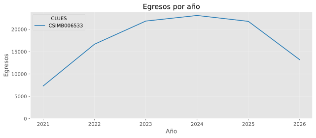
| Posición | Afección principal | Egresos |
|---|---|---|
| 1 | DIÁLISIS EXTRACORPÓREA | 5675 |
| 2 | SESIÓN DE QUIMIOTERAPIA POR TUMOR | 1353 |
| 3 | DIABETES MELLITUS TIPO 2, CON COMPLICACIONES CIRCULATORIAS PERIFÉRICAS | 656 |
| 4 | APENDICITIS, NO ESPECIFICADA | 328 |
| 5 | CÁLCULO DE LA VESÍCULA BILIAR CON OTRA COLECISTITIS | 154 |
| 6 | OTRAS DIABETES MELLITUS ESPECIFICADAS, CON COMPLICACIONES MÚLTIPLES | 108 |
| 7 | TRAUMATISMOS SUPERFICIALES MÚLTIPLES, NO ESPECIFICADOS | 100 |
| 8 | TRAUMATISMO INTRACRANEAL, NO ESPECIFICADO | 92 |
| 9 | ENFERMEDAD RENAL CRÓNICA, NO ESPECIFICADA | 92 |
| 10 | HERNIA INGUINAL UNILATERAL O NO ESPECIFICADA, SIN OBSTRUCCIÓN NI GANGRENA | 91 |
| 11 | NEUMONÍA, NO ESPECIFICADA | 65 |
| 12 | OTROS CUIDADOS ESPECIFICADOS POSTERIORES A LA ORTOPEDIA | 58 |
| 13 | EPILEPSIA, TIPO NO ESPECIFICADO | 54 |
| 14 | HIPERTENSIÓN ESENCIAL (PRIMARIA) | 53 |
| 15 | FRACTURA DE LA DIÁFISIS DE LA TIBIA | 51 |
| 16 | HEMATEMESIS | 42 |
| 17 | PANCREATITIS AGUDA, NO ESPECIFICADA | 41 |
| 18 | TUMOR MALIGNO DE LA MAMA, PARTE NO ESPECIFICADA | 40 |
| 19 | QUEMADURA DE SEGUNDO GRADO, REGIÓN DEL CUERPO NO ESPECIFICADA | 36 |
| 20 | DIABETES MELLITUS TIPO 2, SIN MENCIÓN DE COMPLICACIÓN | 36 |
| 21 | OTROS | 2458 |
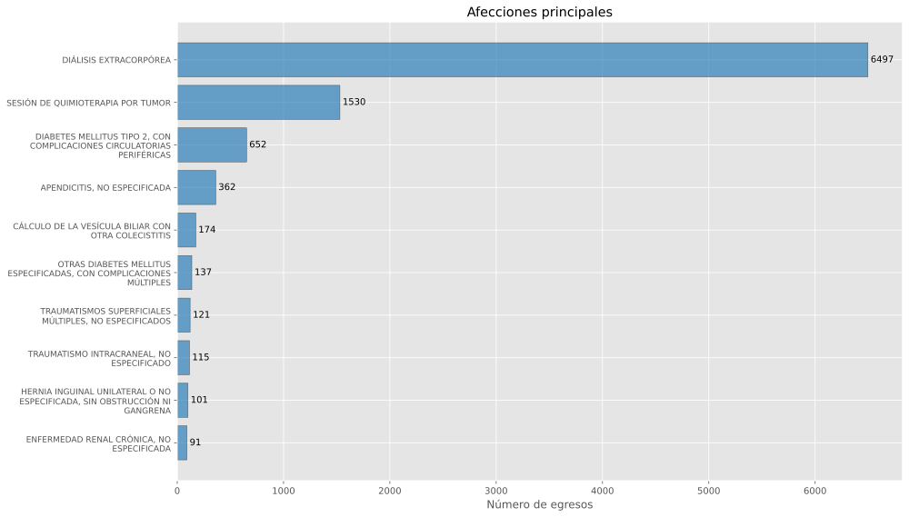
| Posición | Servicio de ingreso | Egresos |
|---|---|---|
| 1 | NO APLICA | 8335 |
| 2 | OTROS SERVICIOS DE ADULTOS | 1966 |
| 3 | PEDIATRÍA | 612 |
| 4 | CIRUGÍA GENERAL | 384 |
| 5 | MEDICINA INTERNA | 172 |
| 6 | TRAUMATOLOGÍA | 106 |
| 7 | UNIDAD DE TERAPIA INTENSIVA | 4 |
| 8 | UNIDAD DE TERAPIA INTENSIVA PEDIÁTRICA | 3 |
| 9 | ANESTESIA | 1 |
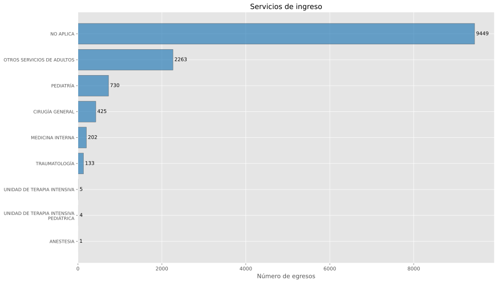
| Posición | Servicio de egreso | Egresos |
|---|---|---|
| 1 | UNIDAD DE HEMODIÁLISIS | 5683 |
| 2 | CIRUGÍA GENERAL | 2158 |
| 3 | ONCOLOGÍA | 1356 |
| 4 | MEDICINA INTERNA | 1071 |
| 5 | PEDIATRÍA | 744 |
| 6 | TRAUMATOLOGÍA | 526 |
| 7 | UNIDAD DE TERAPIA INTENSIVA | 29 |
| 8 | UNIDAD DE TERAPIA INTENSIVA PEDIÁTRICA | 12 |
| 9 | OFTALMOLOGÍA | 2 |
| 10 | MEDICINA TRANSFUNCIONAL | 1 |
| 11 | OTROS | 1 |
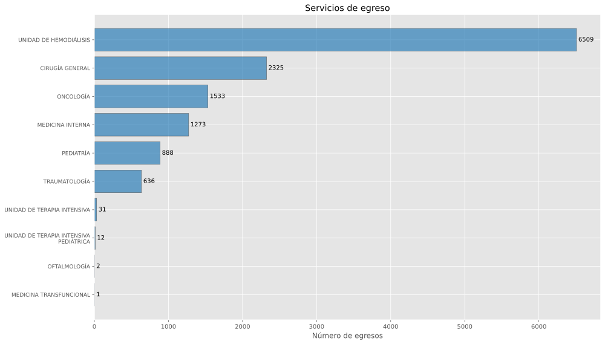
| Posición | Procedencia | Egresos |
|---|---|---|
| 1 | CONSULTA EXTERNA | 8419 |
| 2 | URGENCIAS | 3161 |
| 3 | OTRO | 3 |
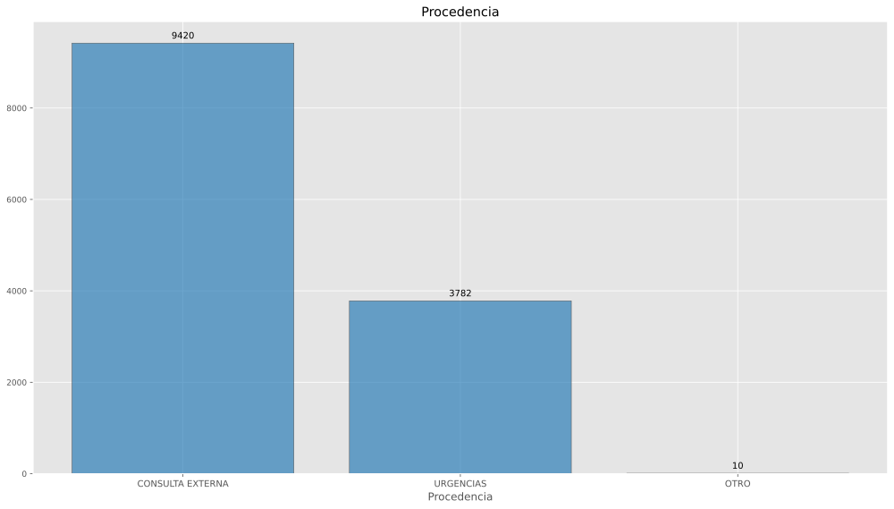
| Posición | Motivo de egreso | Egresos |
|---|---|---|
| 1 | MEJORÍA | 11014 |
| 2 | CURACIÓN | 236 |
| 3 | DEFUNCIÓN | 186 |
| 4 | VOLUNTARIO | 114 |
| 5 | TRASLADO A OTRA UNIDAD | 20 |
| 6 | OTRO | 13 |
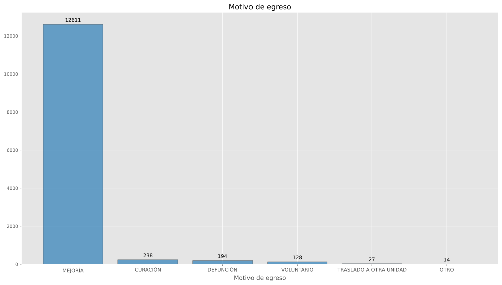
| Posición | Procedimiento quirúrgico | Egresos |
|---|---|---|
| 1 | DESBRIDAMIENTO EXCISIONAL DE HERIDA, INFECCIÓN O QUEMADURA | 466 |
| 2 | OTRA INCISIÓN CON DRENAJE DE PIEL Y TEJIDO SUBCUTÁNEO | 344 |
| 3 | OTRA APENDICECTOMÍA | 302 |
| 4 | LAPAROTOMÍA EXPLORADORA | 227 |
| 5 | COLECISTECTOMÍA | 126 |
| 6 | REPARACIÓN UNILATERAL DE HERNIA INGUINAL, NO ESPECIFICADA DE OTRA MANERA | 88 |
| 7 | REDUCCIÓN ABIERTA DE FRACTURA CON FIJACIÓN INTERNA. OTROS HUESOS ESPECÍFICOS | 79 |
| 8 | APLICACIÓN DE DISPOSITIVO FIJADOR EXTERNO, OTRO SITIO ESPECIFICADO | 73 |
| 9 | DESBRIDAMIENTO DE SITIO DE FRACTURA ABIERTA. OTROS HUESOS ESPECÍFICOS | 59 |
| 10 | FIJACIÓN INTERNA DE HUESO SIN REDUCCIÓN DE FRACTURA, OTROS SITIOS ESPECIFICADOS | 48 |
| 11 | REDUCCIÓN ABIERTA DE FRACTURA CON FIJACIÓN INTERNA. TIBIA Y PERONÉ | 42 |
| 12 | AMPUTACIÓN DE DEDO DE PIE | 40 |
| 13 | REDUCCIÓN ABIERTA DE FRACTURA CON FIJACIÓN INTERNA. FÉMUR | 40 |
| 14 | REDUCCIÓN ABIERTA DE FRACTURA CON FIJACIÓN INTERNA. RADIO Y CÚBITO | 34 |
| 15 | OTRA EXTIRPACIÓN LOCAL O DESTRUCCIÓN DE LESIÓN O TEJIDO DE PIEL Y TEJIDO SUBCUTÁNEO | 31 |
| 16 | FIJACIÓN INTERNA DE HUESO SIN REDUCCIÓN DE FRACTURA, FÉMUR | 27 |
| 17 | DRENAJE ABDOMINAL PERCUTÁNEO | 26 |
| 18 | APLICACIÓN DE DISPOSITIVO FIJADOR EXTERNO TIBIA Y PERONÉ | 25 |
| 19 | APLICACIÓN DE DISPOSITIVO FIJADOR EXTERNO FÉMUR | 25 |
| 20 | REDUCCIÓN ABIERTA DE FRACTURA CON FIJACIÓN INTERNA. SITIO NO ESPECIFICADO | 24 |
| 21 | OTROS | 1054 |
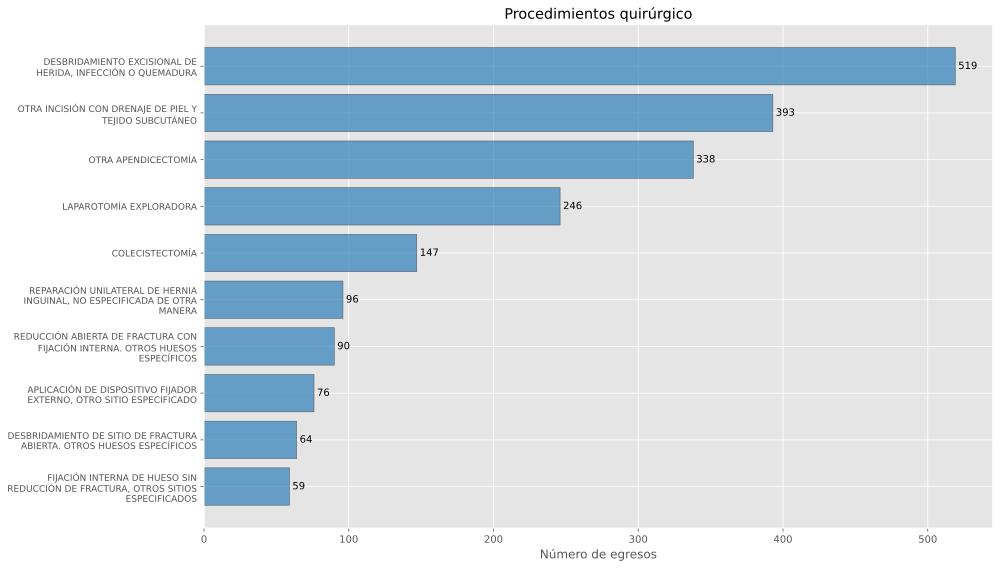
| Posición | Procedimiento terapéutico | Egresos |
|---|---|---|
| 1 | HEMODIÁLISIS | 5678 |
| 2 | INYECCIÓN O INFUSIÓN DE SUSTANCIA QUIMIOTERAPÉUTICA CONTRA CÁNCER | 1379 |
| 3 | CURACIÓN DE HERIDA | 718 |
| 4 | OTRA IRRIGACIÓN DE HERIDA | 327 |
| 5 | PSICOTERAPIA VERBAL DE APOYO | 110 |
| 6 | APLICACIÓN DE OTRO VENDAJE DE HERIDA | 101 |
| 7 | OTRA TRANSFUSIÓN DE SANGRE ENTERA | 28 |
| 8 | CATETERISMO VENOSO, NO CLASIFICADO BAJO OTRO CONCEPTO | 20 |
| 9 | INSERCIÓN DE TUBO ENDOTRAQUEAL | 13 |
| 10 | INYECCIÓN O INFUSIÓN DE OTRA SUSTANCIA TERAPÉUTICA O PROFILÁCTICA | 8 |
| 11 | DISECCIÓN VENOSA | 7 |
| 12 | EXTRACCIÓN DE DISPOSITIVO DE DRENAJE PERITONEAL | 4 |
| 13 | EXTRACCIÓN DE OTRO DISPOSITIVO DE DRENAJE URINARIO | 3 |
| 14 | CATETERISMO VENOSO PARA DIÁLISIS RENAL | 3 |
| 15 | INSERCIÓN DE CATÉTER URINARIO PERMANENTE | 3 |
| 16 | TRANSFUSIÓN DE CONCENTRADO DE HEMATÍES | 2 |
| 17 | RESUSCITACIÓN CARDIOPULMONAR, NO ESPECIFICADA DE OTRA MANERA | 2 |
| 18 | APLICACIÓN DE FÉRULA | 1 |
| 19 | CATETERISMO ARTERIAL | 1 |
| 20 | EXTRACCIÓN DE TUBO EN T, OTRO TUBO DE VÍA BILIAR O TUBO HEPÁTICO | 1 |
| 21 | OTROS | 3 |
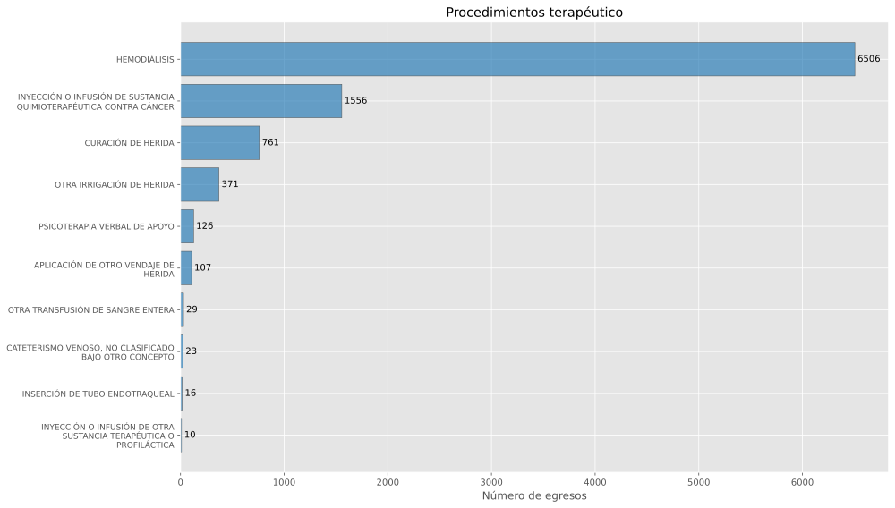
| Posición | Procedimiento de diagnóstico | Egresos |
|---|---|---|
| 1 | EXAMEN MICROSCÓPICO DE SANGRE. OTRO EXAMEN MICROSCÓPICO | 2724 |
| 2 | OTRAS RADIOGRAFÍAS, NO ESPECIFICADAS | 495 |
| 3 | RADIOGRAFÍA TORÁCICA RUTINARIA, DESCRITA COMO TAL | 281 |
| 4 | OTRAS ULTRASONOGRAFÍAS DIAGNÓSTICAS | 220 |
| 5 | TOMOGRAFÍA AXIAL COMPUTARIZADA DE CABEZA | 121 |
| 6 | ULTRASONOGRAFIA DIAGNÓSTICA DEL ABDOMEN Y EL RETROPERITONEO | 121 |
| 7 | OTRA TOMOGRAFÍA AXIAL COMPUTARIZADA | 109 |
| 8 | OTRAS RADIOGRAFÍAS DE ABDOMEN | 74 |
| 9 | ELECTROCARDIOGRAMA | 46 |
| 10 | IMAGEN INTRAVASCULAR DE VASOS RENALES | 39 |
| 11 | TOMOGRAFÍA AXIAL COMPUTARIZADA DEL ABDÓMEN | 27 |
| 12 | IMÁGENES POR RESONANCIA DE OTRAS ÁREAS Y DE ÁREAS NO ESPECIFICADAS | 23 |
| 13 | TOMOGRAFÍA AXIAL COMPUTARIZADA DEL TÓRAX | 23 |
| 14 | ULTRASONOGRAFÍA DIAGNÓSTICA DEL APARATO DIGESTIVO | 21 |
| 15 | GASOMETRÍA INTRA ARTERIAL CONTINUA | 14 |
| 16 | RADIOGRAFÍA ÓSEA DEL TOBILLO Y EL PIE | 14 |
| 17 | RADIOGRAFÍA ÓSEA DE LA MUÑECA Y LA MANO | 13 |
| 18 | RADIOGRAFÍA ÓSEA DEL HOMBRO Y EL BRAZO SUPERIOR | 13 |
| 19 | OTRA GASTROSCOPIA | 12 |
| 20 | LAVADO PERITONEAL | 12 |
| 21 | OTROS | 170 |
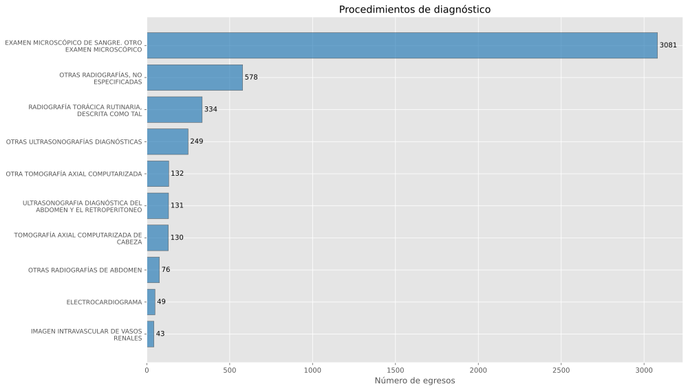
Con base en (Secretaría de Salud - DGIS, 4 de agosto de 2026b)
| clues | Año | Urgencias |
|---|---|---|
| CSIMB006533 | 2023 | 18350 |
| CSIMB006533 | 2024 | 16434 |
| CSIMB006533 | 2025 | 14074 |
| CSIMB006533 | 2026 | 10319 |
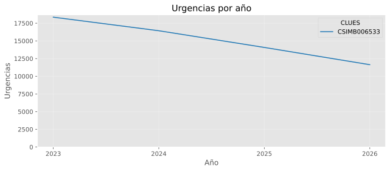
| Posición | Afección principal | Urgencias |
|---|---|---|
| 1 | TRAUMATISMOS SUPERFICIALES MÚLTIPLES, NO ESPECIFICADOS | 519 |
| 2 | OTROS DOLORES ABDOMINALES Y LOS NO ESPECIFICADOS | 507 |
| 3 | DIABETES MELLITUS TIPO 2, CON COMPLICACIONES CIRCULATORIAS PERIFÉRICAS | 366 |
| 4 | OBSERVACIÓN POR SOSPECHA DE OTRAS ENFERMEDADES Y AFECCIONES | 361 |
| 5 | TRAUMATISMO INTRACRANEAL, NO ESPECIFICADO | 321 |
| 6 | HIPERTENSIÓN ESENCIAL (PRIMARIA) | 247 |
| 7 | GASTROENTERITIS Y COLITIS DE ORIGEN NO ESPECIFICADO | 245 |
| 8 | CÁLCULO DE LA VESÍCULA BILIAR CON OTRA COLECISTITIS | 179 |
| 9 | FIEBRE, NO ESPECIFICADA | 173 |
| 10 | INFECCIÓN DE VÍAS URINARIAS, SITIO NO ESPECIFICADO | 156 |
| 11 | OTRAS CONVULSIONES Y LAS NO ESPECIFICADAS | 146 |
| 12 | ENFERMEDAD RENAL CRÓNICA, NO ESPECIFICADA | 140 |
| 13 | COLITIS Y GASTROENTERITIS NO INFECCIOSAS, NO ESPECIFICADAS | 137 |
| 14 | VENAS VARICOSAS DE LOS MIEMBROS INFERIORES CON ÚLCERA | 127 |
| 15 | APENDICITIS, NO ESPECIFICADA | 117 |
| 16 | DIABETES MELLITUS TIPO 2, SIN MENCIÓN DE COMPLICACIÓN | 107 |
| 17 | NEUMONÍA, NO ESPECIFICADA | 94 |
| 18 | CEFALEA | 84 |
| 19 | TRASTORNO DE ANSIEDAD, NO ESPECIFICADO | 82 |
| 20 | RINOFARINGITIS AGUDA [RESFRIADO COMÚN] | 78 |
| 21 | OTROS | 6133 |
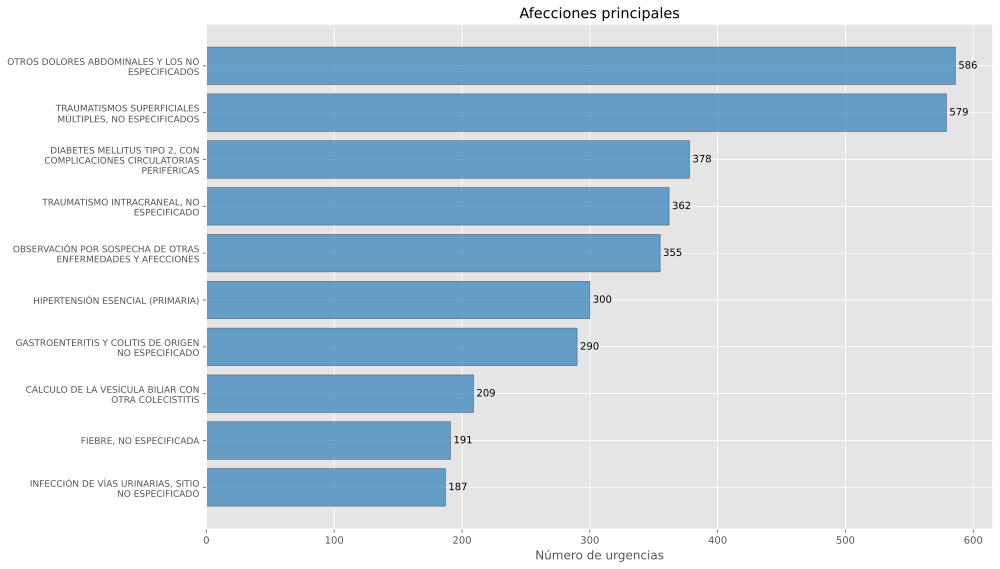
| Posición | Motivo de urgencia | Urgencias |
|---|---|---|
| 1 | MÉDICA | 8084 |
| 2 | PEDIÁTRICA | 1362 |
| 3 | ACCIDENTES, ENVENENAMIENTO Y VIOLENCIA | 871 |
| 4 | GINECO-OBSTÉTRICA | 2 |
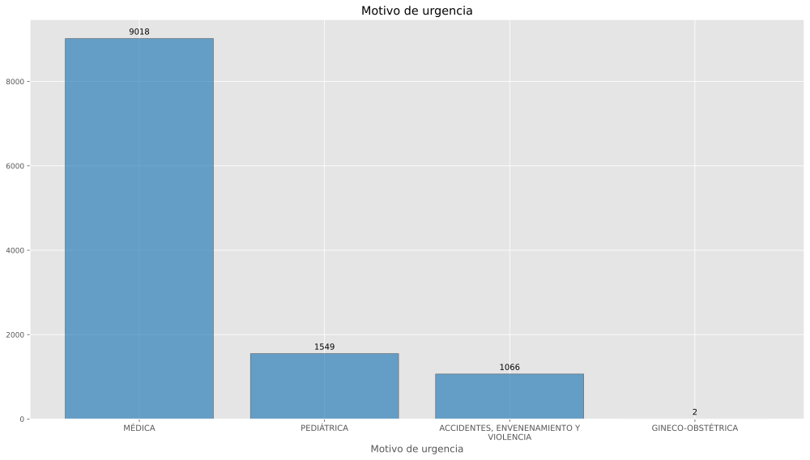
| Posición | Tipo de urgencia | Urgencias |
|---|---|---|
| 1 | URGENCIA NO CALIFICADA | 6005 |
| 2 | URGENCIA CALIFICADA | 4314 |
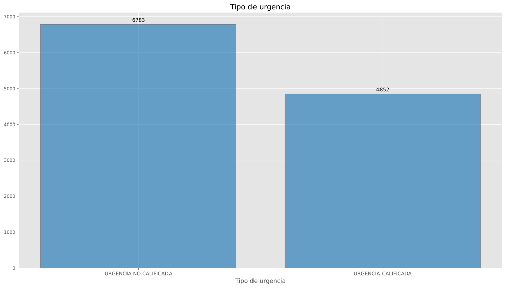
| Posición | Tipo de cama | Urgencias |
|---|---|---|
| 1 | SIN CAMA | 6908 |
| 2 | NO ESPECIFICADO | 2284 |
| 3 | CAMA DE OBSERVACION | 1067 |
| 4 | CAMA DE CHOQUE | 60 |
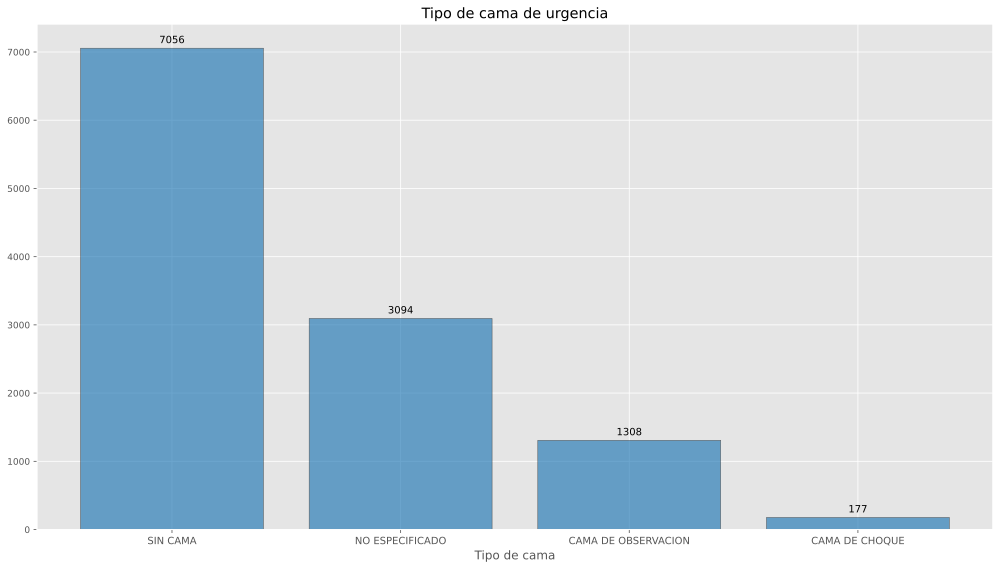
| Posición | Enviado a | Urgencias |
|---|---|---|
| 1 | DOMICILIO | 4422 |
| 2 | HOSPITALIZACIÓN | 3569 |
| 3 | CONSULTA EXTERNA | 1425 |
| 4 | SALE POR VOLUNTAD PROPIA | 564 |
| 5 | SALE POR DEFUNCIÓN | 300 |
| 6 | SALE POR FUGA | 22 |
| 7 | TRASLADO A OTRA UNIDAD | 17 |
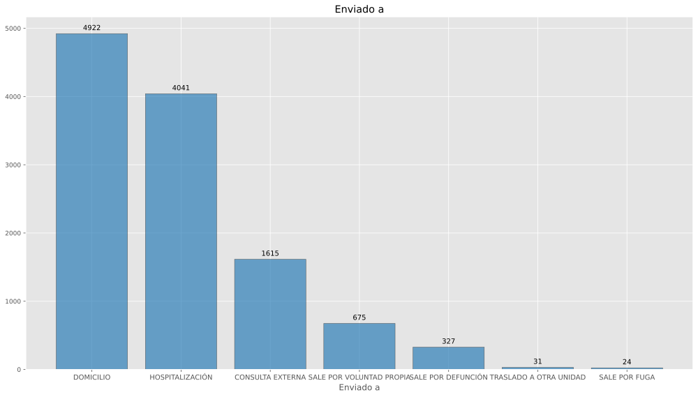
| Posición | Procedimiento quirúrgico | Urgencias |
|---|---|---|
| 1 | DESBRIDAMIENTO EXCISIONAL DE HERIDA, INFECCIÓN O QUEMADURA | 509 |
| 2 | CIERRE DE PIEL Y TEJIDO SUBCUTÁNEO DE OTROS SITIOS | 51 |
| 3 | DESBRIDAMIENTO NO EXCISIONAL DE HERIDA, INFECCIÓN O QUEMADURA | 9 |
| 4 | LAPAROTOMÍA EXPLORADORA | 8 |
| 5 | OTRA APENDICECTOMÍA | 5 |
| 6 | OTRA INCISIÓN CON DRENAJE DE PIEL Y TEJIDO SUBCUTÁNEO | 4 |
| 7 | INSERCIÓN DE CATÉTER INTERCOSTAL PARA DRENAJE | 4 |
| 8 | OTRA SUTURA DE OTRO TENDÓN DE MANO | 4 |
| 9 | AMPUTACIÓN INTERTORACOESCAPULAR | 4 |
| 10 | OTRA DESTRUCCIÓN DE DISCO INTERVERTEBRAL | 3 |
| 11 | COLECISTECTOMÍA | 3 |
| 12 | INSERCIÓN DE UN SISTEMA DE MARCAPASOS TRANSVENOSO TEMPORAL | 2 |
| 13 | OTRA INCISIÓN DE PIEL Y TEJIDO SUBCUTÁNEO | 2 |
| 14 | DESBRIDAMIENTO DE SITIO DE FRACTURA ABIERTA. TIBIA Y PERONÉ | 2 |
| 15 | AMPUTACIÓN DE DEDO DE PIE | 2 |
| 16 | ARTROTOMÍA PARA EXTRACCIÓN DE PRÓTESIS. OTROS SITIOS ESPECIFICADOS | 2 |
| 17 | REDUCCIÓN ABIERTA DE FRACTURA CON FIJACIÓN INTERNA. OTROS HUESOS ESPECÍFICOS | 2 |
| 18 | DRENAJE ABDOMINAL PERCUTÁNEO | 2 |
| 19 | REPARACIÓN UNILATERAL DE HERNIA INGUINAL, NO ESPECIFICADA DE OTRA MANERA | 2 |
| 20 | FASCIOTOMÍA | 2 |
| 21 | OTROS | 42 |
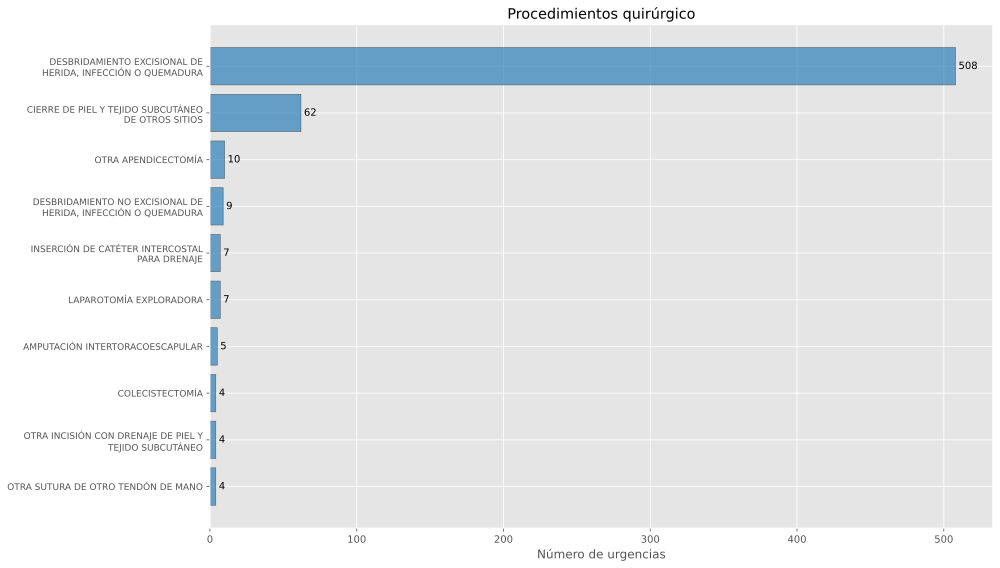
| Posición | Procedimiento terapéutico | Urgencias |
|---|---|---|
| 1 | CURACIÓN DE HERIDA | 595 |
| 2 | INYECCIÓN O INFUSIÓN DE OTRA SUSTANCIA TERAPÉUTICA O PROFILÁCTICA | 343 |
| 3 | INSERCIÓN DE TUBO ENDOTRAQUEAL | 61 |
| 4 | CATETERISMO VENOSO, NO CLASIFICADO BAJO OTRO CONCEPTO | 56 |
| 5 | PSICOTERAPIA VERBAL DE APOYO | 46 |
| 6 | RESUSCITACIÓN CARDIOPULMONAR, NO ESPECIFICADA DE OTRA MANERA | 34 |
| 7 | APLICACIÓN DE FÉRULA | 25 |
| 8 | MEDICACIÓN RESPIRATORIA ADMINISTRADA MEDIANTE NEBULIZADOR | 24 |
| 9 | INSERCIÓN DE CATÉTER URINARIO PERMANENTE | 18 |
| 10 | OTRA TRANSFUSIÓN DE SANGRE ENTERA | 17 |
| 11 | OTRA SOMATOTERAPIA PSIQUIÁTRICA | 9 |
| 12 | INSERCIÓN DE OTRO TUBO (NASO-) GÁSTRICO | 8 |
| 13 | OTRA IRRIGACIÓN DE HERIDA | 7 |
| 14 | APLICACIÓN DE OTRO VENDAJE DE HERIDA | 7 |
| 15 | HEMODIÁLISIS | 5 |
| 16 | VENTILACIÓN MECÁNICA INVASIVA CONTINUA DE DURACIÓN NO ESPECIFICADA | 2 |
| 17 | INYECCIÓN O INFUSIÓN DE ELECTROLITOS | 2 |
| 18 | OTRA INMOVILIZACIÓN, PRESIÓN Y CUIDADO DE HERIDA | 2 |
| 19 | CATETERISMO VENOSO PARA DIÁLISIS RENAL | 1 |
| 20 | APLICACIÓN DE VENDAJE DE PRESIÓN | 1 |
| 21 | OTROS | 11 |
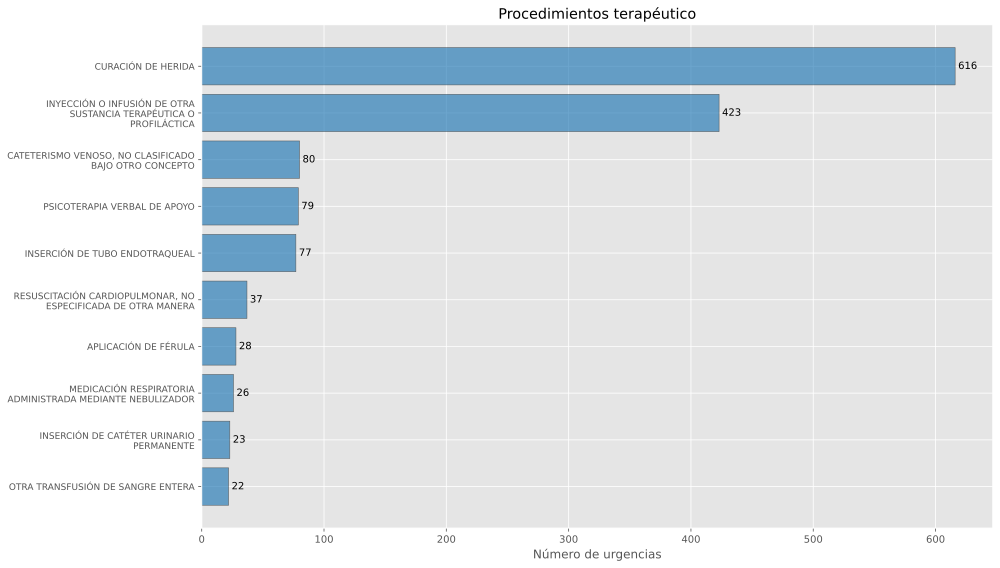
| Posición | Procedimiento de diagnóstico | Urgencias |
|---|---|---|
| 1 | CONSULTA NO ESPECIFICADA DE OTRA MANERA | 7148 |
| 2 | EXAMEN MICROSCÓPICO DE SANGRE. OTRO EXAMEN MICROSCÓPICO | 3432 |
| 3 | OTRAS RADIOGRAFÍAS, NO ESPECIFICADAS | 841 |
| 4 | RADIOGRAFÍA TORÁCICA RUTINARIA, DESCRITA COMO TAL | 355 |
| 5 | OTRAS ULTRASONOGRAFÍAS DIAGNÓSTICAS | 309 |
| 6 | TOMOGRAFÍA AXIAL COMPUTARIZADA DE CABEZA | 232 |
| 7 | ULTRASONOGRAFIA DIAGNÓSTICA DEL ABDOMEN Y EL RETROPERITONEO | 173 |
| 8 | ELECTROCARDIOGRAMA | 151 |
| 9 | OTRAS RADIOGRAFÍAS DE ABDOMEN | 88 |
| 10 | OTRA TOMOGRAFÍA AXIAL COMPUTARIZADA | 72 |
| 11 | RADIOGRAFÍA ÓSEA DEL TOBILLO Y EL PIE | 53 |
| 12 | RADIOGRAFÍA ÓSEA DE LA MUÑECA Y LA MANO | 52 |
| 13 | IMAGEN INTRAVASCULAR DE VASOS RENALES | 50 |
| 14 | GASOMETRÍA INTRA ARTERIAL CONTINUA | 35 |
| 15 | TOMOGRAFÍA AXIAL COMPUTARIZADA DEL ABDÓMEN | 25 |
| 16 | ULTRASONOGRAFÍA DIAGNÓSTICA DEL APARATO DIGESTIVO | 22 |
| 17 | EXAMEN MICROSCÓPICO DE MUESTRA DE VEJIGA, URETRA, PRÓSTATA, VESÍCULA SEMINAL, TEJIDO PERIVESICAL Y DE ORINA Y DE SEMEN. OTRO EXAMEN MICROSCÓPICO | 22 |
| 18 | RADIOGRAFÍA ÓSEA DEL MUSLO, LA RODILLA Y LA PIERNA INFERIOR | 20 |
| 19 | RADIOGRAFÍA ÓSEA DEL HOMBRO Y EL BRAZO SUPERIOR | 20 |
| 20 | OTRAS RADIOGRAFÍAS DE CRÁNEO | 18 |
| 21 | OTROS | 192 |
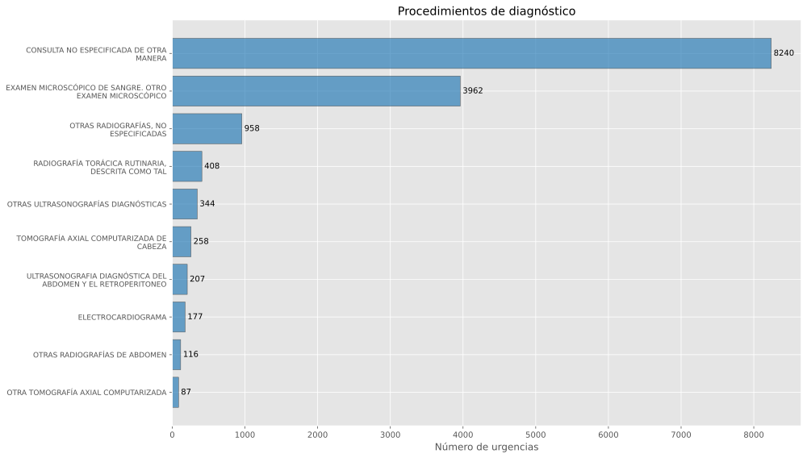
El cálculo de los indicadores estratégicos para evaluar el componente de atención en unidades de salud, fueron propuestos por (Servicios de Salud IMBB Bienestar, 2025).
Con las bases de datos compartidas por
DGIS, podemos calcular únicamente los
indicadores del 75 al 81 y el 84
El cálculo de los indicadores fue realizado para el siguiete rango de fechas:
Fecha inicial: 2026-01-01
Fecha final: 2026-06-30
ATN-07
Fuente de datos:
Estima el número de camas disponibles por médicos activos.
Proporciona una visión sobre la disponibilidad de médicos en relación al número de camas censables, en unidades hospitalarias del IMSS Bienestar.
\[ Indicador_{75} = \frac{m_{e}}{c_{c}} \]
Donde:
\(m_{e} =\) Total de médicos especialistas registrados en unidades del IMB
\(c_{c}=\) Total de camas censables
| Calificación | Rango |
|---|---|
| Óptimo | 0.6 - 0.8 |
| Esperado | 0.4 - 0.59 |
| Regular | 0.2 - 0.39 |
| Crítico | < 0.2 |
| clues | Médicos especialistas | Camas censables | Indicador 75 | Calificación |
|---|---|---|---|---|
| CSIMB006533 | 211 | 136 | 1.55 | Regular * |
ATN-08
Fuente de datos:
Mide el grado de utilización de cama censables por día, a partir de los días estancia de los pacientes internados.
Proporciona una visión sobre la utilización de la capacidad hospitalaria, en unidades de salud del IMSS Bienestar.
\[ Indicador_{76} = \frac{d_{e}}{c_{c} \cdot \Delta t} \times 100 \]
Donde:
\(d_{e} =\) Total de días estancia de egresos hospitalarios durante periodo de análisis
\(c_{c} =\) Total de camas censables
\(\Delta t =\) Número de días del periodo de análisis
| Calificación | Rango |
|---|---|
| Óptimo | 80.0 - 90.0 |
| Esperado | 70.0 - 79.9 |
| Regular | 50.0 - 69.9 o > 90.0 |
| Crítico | < 50.0 |
| clues | Días estancia | Camas censables | Indicador 76 | Calificación |
|---|---|---|---|---|
| CSIMB006533 | 23,625 | 136 | 96.0 | Regular. Por encima de óptimo |
ATN-09
Fuente de datos:
Exhibe número promedio de días que un paciente permanece internado en el hospital.
Proporciona una visión sobre la duración de las estancias hospitalarias y puede reflejar la eficiencia del cuidado médico y la complejidad de los casos atendidos, en hospitales del IMSS Biienestar.
\[ Indicador_{77} = \frac{d_{e}}{e_{h}} \]
Donde:
\(d_{e} =\) Total de días estancia de egresos hospitalarios durante periodo de análisis
\(e_{h} =\) Total de egresos hospitalarios
| Calificación | Rango |
|---|---|
| Óptimo | 3.96 - 5.85 |
| Esperado | 5.86 - 6.42 |
| Regular | > 6.42 |
| Crítico | < 3.96 |
| clues | Dias estancia | Egresos | Indicador 77 | Calificación |
|---|---|---|---|---|
| CSIMB006533 | 23,625 | 10,002 | 2.36 | Crítico |
ATN-10
Fuente de datos:
Muestra el número de atenciones (consultas) de urgencia médica en promedio por consultorio disponible, de manera mensual en hospitales del IMSS Bienestar.
\[ Indicador_{78} = \frac{u_{m}}{c_{u} \cdot \Delta t} \]
Donde:
\(u_{m} =\) Total de atenciones en servicio de urgencias médicas
\(c_{u} =\) Total de consultorios registrados para el servicio de urgencia médica
\(\Delta t =\) Número de días del periodo de análisis
| Calificación | Rango |
|---|---|
| Óptimo | 15 - 25 |
| Esperado | 10 - 14 o 26 - 30 |
| Regular | 5 - 9 o > 30 |
| Crítico | < 5 |
| clues | Urgencias | Consultorios urgencias | Indicador 78 | Calificación |
|---|---|---|---|---|
| CSIMB006533 | 8,891 | 3 | 16.4 | Óptimo |
ATN-11
Fuente de datos:
Mide la Proporción de pacientes hospitalizados por cama disponible por mes.
Proporciona una visión sobre la utilización de la capacidad hospitalaria, en unidades de salud del IMSS Bienestar.
\[ Indicador_{79} = \frac{e_{h}}{c_{c} \cdot \Delta t} \]
Donde:
\(e_{h}=\) Total de egresos hospitalarios
\(c_{c} =\) Total de camas censables
\(\Delta t =\) Número de días del periodo de análisis
| Calificación | Rango |
|---|---|
| Óptimo | 3.91 - 5.1 |
| Esperado | 3.0 - 3.90 o 5.11 - 6.0 |
| Regular | 2.0 - 2.9 |
| Crítico | < 2.0 |
| clues | Egresos | Camas censables | Indicador 79 | Calificación |
|---|---|---|---|---|
| CSIMB006533 | 10,002 | 136 | 0.41 | Crítico |
ATN-12
Fuente de datos:
Estima Porcentaje de egresos hospitalarios por motivo de curación o mejoría en unidades médicas del IMSS Bienestar dentro un periodo determinado.
Se relaciona con la eficacia en los tratamientos y la calidad de la atención.
\[ Indicador_{80} = \frac{e_{h_{m}}}{e_{h}} \times 100 \]
Donde:
\(e_{h}=\) Total de egresos hospitalarios
\(e_{h_{m}} =\) Número de egresos hospitalarios por motivo de curación o mejoría
| Calificación | Rango |
|---|---|
| Óptimo | 95 - 100 |
| Esperado | 90 - 94.9 |
| Regular | 80 - 89.9 |
| Crítico | < 80 |
| clues | curacion_mejoria | egresos | Indicador 80 | Calificación |
|---|---|---|---|---|
| CSIMB006533 | 9,702 | 10,002 | 97.00 | Óptimo |
ATN-13
Fuente de datos:
Expresa el número promedio de cirugías realizadas por quirófanos habilitados durante un mes en hospitales del IMSS Bienestar.
Mide el grado de utilización de quirófanos en cirugías.
\[ Indicador_{81} = \frac{i_{q}}{s_{o} \cdot \Delta t} \]
Donde:
\(i_{q} =\) Número de cirugías realizadas por mes calendario
\(s_{o} =\) Número de quirófanos habilitados en unidades del IMB
\(\Delta t =\) Número de días del periodo de análisis
| Calificación | Rango |
|---|---|
| Óptimo | 2.0 - 3.5 |
| Esperado | 1.0 - 1.9 o 3.6 - 4.0 |
| Regular | 0.5 - 0.9 o > 4.0 |
| Crítico | < 0.5 |
| clues | Cirugias | Quirofanos | Indicador 81 | Calificación |
|---|---|---|---|---|
| CSIMB006533 | 2,634 | 6 | 2.4 | Óptimo |
ATN-16
Fuente de datos:
Muestra la relación entre el número de egresos por defunción y el total de egresos hospitalarios, excluyendo los egresos relacionados con la atención obstétrica
\[ Indicador_{84} = \frac{e_{h_{d}}}{e_{h}} \cdot 1000 \]
Donde:
\(e_{h_{d}} =\) Número de egresos por defunción ocurridos de manera intrahospitalaria
\(e_{h}=\) Total de egresos hospitalarios
En ambas variables, se excluyen los egresos relacionados con la atención obstétrica
| Calificación | Rango |
|---|---|
| Óptimo | \(\leq\) 16.9 |
| Esperado | 17.0 - 23.9 |
| Regular | 24.0 - 30.9 |
| Crítico | \(\geq\) 31.0 |
| clues | Defunción | Egresos | Indicador 84 | Calificación |
|---|---|---|---|---|
| CSIMB006533 | 165 | 10,002 | 16.5 | Óptimo |
Descargar CSIMB006533.pdf
CRETI, acrónimo de Corrosivo, Reactivo, Explosivo, Tóxico, e Inflamable↩︎